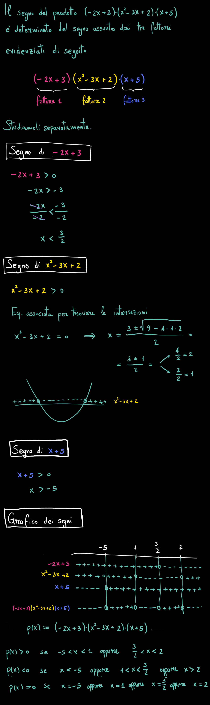

Disequazioni risovibili attraverso il grafico dei segni
/
Disequazioni fratte
Consideriamo la seguente frazione:
\[
\dfrac{1 - 5\color{blue}{}x\color{black}{}}{7\color{blue}{}x\color{black}{} - 2}
\]
Sia il numeratore che il denominatore dipendondo dal valore assegnato ad \(\color{blue}{}x\color{black}{}\).
Il nostro obiettivo è studiare il segno assunto dalla frazione al variare del valore della \(\boldsymbol{x}\).
In altre parole ci poniamo tre domande:
Quali sono i valori che assegnati alla \(x\) fanno assumere alla frazione valori positivi?
Quali sono i valori che assegnati alla \(x\) fanno assumere alla frazione valori negativi?
Quali sono i valori che assegnati alla \(x\) fanno assumere alla frazione valore zero?
Vediamo nei prossimi video qual è la strategia per affrontare il problema.
Consideriamo la disequazione
\[
\dfrac{3x + 6}{-2x + 8} \geq 0
\]
Risolvere questa disequazione significa rispondere alla seguente domanda:
per quali valori della \(x\) la frazione
\[
\dfrac{3x + 6}{-2x + 8}
\]
ha risultato positivo oppure uguale a zero?
Utilizzando il metodo del grafico dei segni possiamo individuare la risposta a questa domanda.
Studio del segno del prodotto di polinomi
Studiamo il segno del seguente prodotto di polinomi al variare del valore della \(x\):
\[
(-2x +3)(x^2 -3x +2)(x + 5)
\]
Questo problema si affronta esattamente come lo studio del segno di una frazione visto in precedenza.
Infatti, il segno del prodotto
\[
(-2x + 3)(x^2 -3x + 2)(x + 5)
\]
dipende dal segno che assumono i tre fattori
\(-2x + 3\qquad\) \(x^2 -3x + 2\qquad\) e \(\,\,x +5\,\,\)
al variare del valore di \(x\).

(Scorrere verso il basso per visualizzare tutto lo svolgimento)